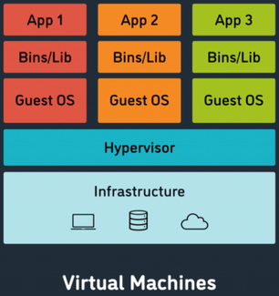
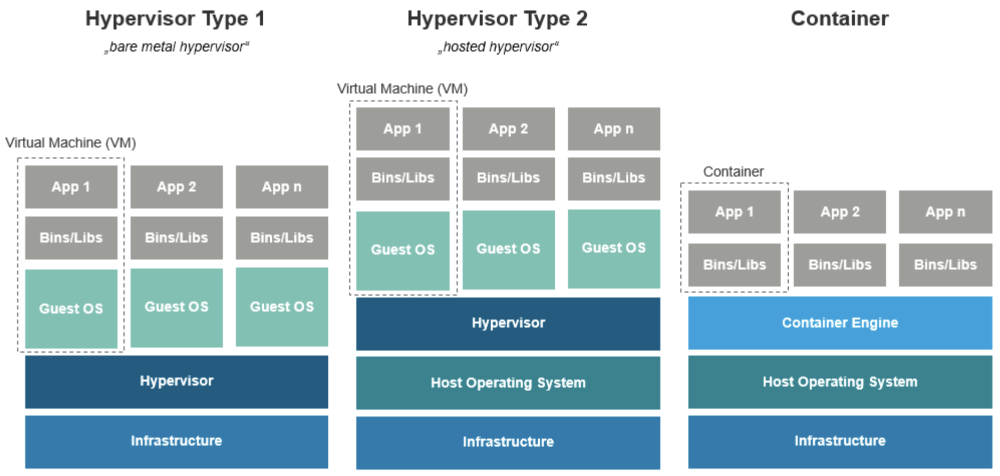

Système
Active directory
...
Virtualisation
Prérequis : Hardware et OS
On expliquera pas ici comment fonctionne en profondeur un hyperviseur, juste ce que c’est et ce que ça fait / à quoi ça sert, pour plus de précision, google est ton ami.

Pour faire un simple, quand on veut séparer des processus, on peut soit faire des groups et des users pour chaque processus sur linux notamment, seulement en faisant ça, si l’unique OS tombe pour une raison X ou Y, ou que vous avez besoin de reboot ou que sais-je, c’est chiant.
Donc on a inventé les VM, pour faire simple, faire tourner plusieurs OS séparément sur une même machine, pour se faire on utilise un hyperviseur.
Il y’en a 2 grands “types” :
Type 1 : L’hyperviseur est directement installé sur l’hôte (bare metal), plus optimisé, utile pour les serveurs uniquement (quasiment).
Les grands noms :
- Proxmox aka KVM (gratuit, linux based mais un peu plus complexe dés que tu veux faire un truc fancy)
- VMware aka ESXI (le grand concurrent de proxmox, mais payant, et mieux
honnêtement) - Nutanix aka AHV (on l’utilise dans ma boite, c’est puissant mais c’est de la merde)
- Hyper-V (Virtualiser sur du Windows, ca marche bien askip mais j’ai jamais essayé)
- Citrix aka Xen (une solution bien overkill pour faire du BYOD très poussé, intéressant mais pas pour nous honnêtement)
Type 2 : Même chose qu’un type 1, mais host sur un OS complet, moins opti, sert surtout quand t’a besoin d’une linux en TP de C lol.
Les (2) grands noms :
- VMware workspace (du vmware mais embarqué sur n’importe quel os)
- VirtualBox (même techno que proxmox, mais dev par oracle cette fois)
- (Hyper-V fonctionne sur Windows 10/11, mais shhhhh)
Pourquoi virtualiser :
- Sécurité : Imaginons que tu run une vieille version de MC (genre t’es un FDP de fan de pvp et tu run de la 1.8), avec des failles sympa de type LOG4J GENRE, bah ton serveur c’est ciao, et TOUS tes autres processus se font niquer avec.
- Simplicité : À gérer c’est beaucoup plus simple
- Tu peux reboot une VM sans te poser trop de questions (pose toi en quelques unes quand même)
- Pas de problème de driver blablabla, tu virtualize ton hardware, c’est tjr le meme, donc les devs s’adaptent, et si ils l’ont pas fait, un mec sur un forum l’a surement fait, et si personne l’a fait, demander au Nix, et si EUX ne l’ont pas fait / ne savent pas faire, bah gg.
Conteneurisation
Prérequis : Virtualisation
Expliquer la conteneurisation sans avoir compris la virtualisation, c’est compliqué donc lis la doc précédente.
Pour comprendre la conteneurisation, on va la comparer avec la virtualisation : 
Comme vu précédemment, la virtualisation va host plusieurs OS, et leurs binaires/librairies séparément ce qui apporte plein d’avantages.
Les conteneurs fonctionnent un poil différemment.
L’objectif est le même : cloisonner
Seulement, on ne le fait pas au niveau de l’OS, en effet l’OS reste le même, ou plus précisément le kernel de l’OS. En faisant cela, on a une application qui tourne dans un environnement effectivement différent, mais qui utilise le même kernel (gain de place en disque notamment), mais la surcouche OS change et les bibliothèques/binaires aussi.
Ca apporte les mêmes avantages que la virtualisation, à 2 différences près :
- C’est plus léger, car tu partage le kernel
- C’est moins safe, car tu partage le kernel
Proxmox propose des conteneurs LXC (linux), qui fonctionnent exactement comme des VM d’un point de vue extérieur, mais il y a un type de conteneurs encore plus intéressant (bien que basé sur LXC), les dockers.
Commentcamarche :
- Tu crée une VM/CT linux quelconque
sudo apt update && apt upgrade -y(la classique)-
Tu installe le docker ! (google est ton ami lol amuse toi bien) (Tu peux soit utiliser apt mais c’est pas toujours stable soit passer par les installer officiels via wget ou curl, dans tous les cas ca marche)
Youhou t’as installé docker, maintenant 2 choix s’offrent à toi :
La voie des faibles (bien pour comprendre au début) :- Tu utilise une image docker de quelqu’un d’autre sur Docker Hub
sudo docker pull helloworldsudo docker run helloworld
La voie des braves : Crée ton image docker
- Tu décris ce que tu veux faire dans un
dockerfile- De quoi tu pars (Une alpine (distro linux ultra légère) ou une ubuntu, c’est pas la même à l’usage)
- Toutes les commandes pour installer / faire ce que tu veux
- La conf réseau que tu veux
- Les volumes que tu veux utiliser etc…
- Tu utilise une image docker de quelqu’un d’autre sur Docker Hub
PufferPanel
...
Wordpress
...